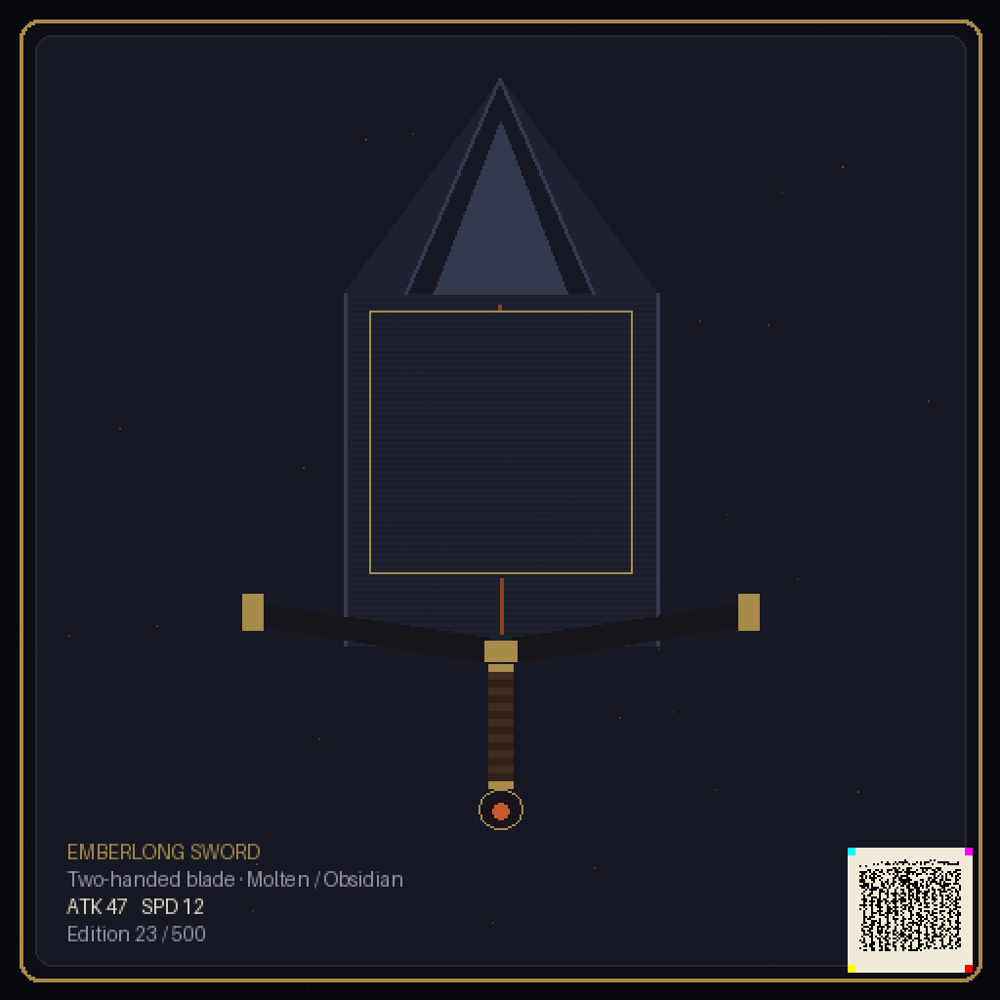
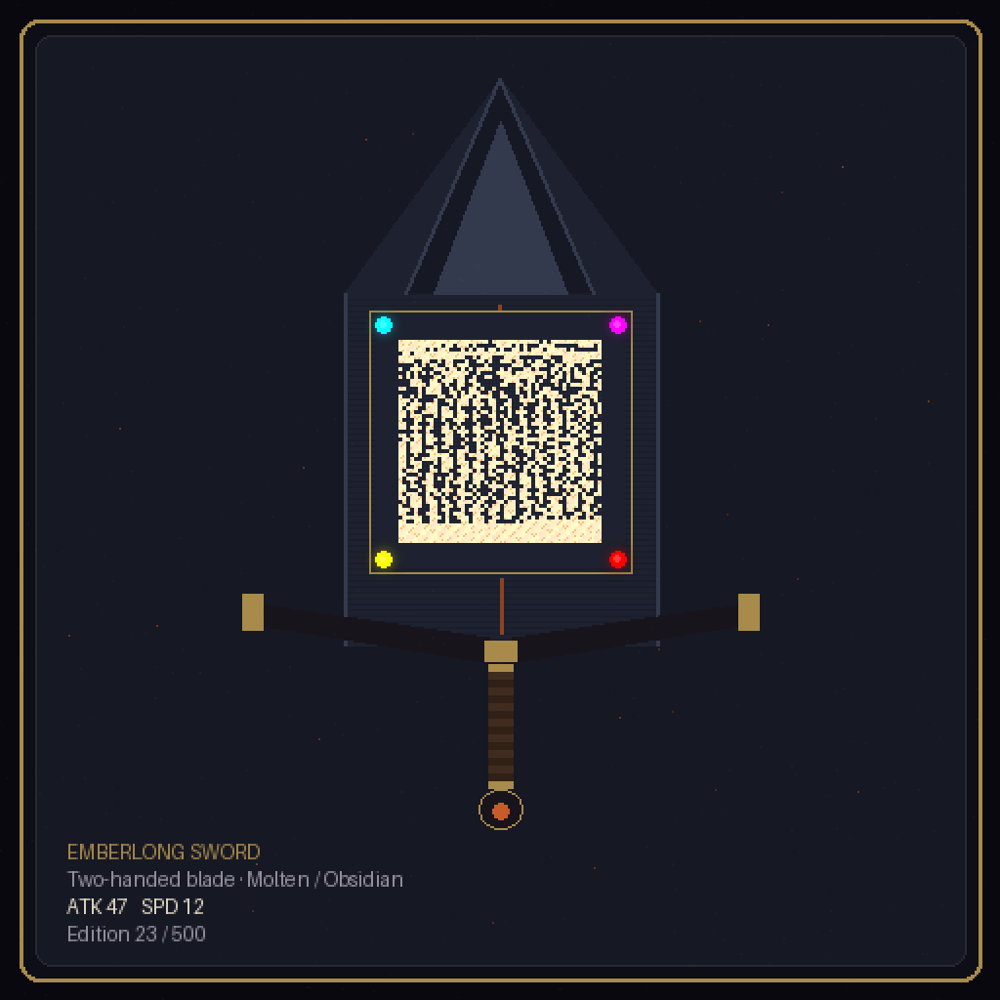

The item render is its own certificate. The screenshot is the receipt.
One signed certificate — item, stats, edition, traits, mint pointer, asset hash — presented two ways. Standard: a normal item card with the bare corner seal (the Sealed Signature standard). Legendary: the certificate woven into the blade as a glowing rune inscription with four gem anchors. Both decode to the identical bytes.

Standard — the seal signs the corner; the card is just a card. This is the default.

Legendary — the runes on the blade ARE the certificate. Works cryptographically; reads as a code to a sharp eye. See the honest note below.
What the seal says
{
"game": "grydbound",
"item": "emberlong-sword",
"edition": 23, "supply": 500,
"stats": {"atk": 47, "spd": 12, "seed": "a91f3c"},
"traits": {"blade": "molten", "guard": "obsidian"},
"mint": "a91f3c2e",
"art": "e64fc8981b2e5437"
}
Signed by the armory key (demo): action 0x17E9 (GAME ITEM) · target GRYD. Scan either card with the scanner.
Why games want this
Trade-window scam killer
The classic MMO scam: link one item, swap another into the trade. If the trade preview carries the seal, a swapped item's cert no longer matches — visible to anyone, no server call.
Streams become scannable
SV's fountain mode was built for video. A viewer can scan a rare drop off a VOD and verify it's real. No other visual code does this.
UGC credit that travels
A creator's signed seal rides every render of their item — screenshots, marketplaces, wikis. Attribution survives reposting.
Scan-to-claim drops
The seal can carry a capability, not just provenance: scan the sword in the trailer, claim it in-game (HTLC mechanics from the treasure design). Marketing → ownership, no signup.
Verified by two independent implementations
Python reference decoder
[standard.png] sig: VALID cert: MATCH [standard.jpg] sig: VALID cert: MATCH [legendary.png] sig: VALID cert: MATCH [legendary.jpg] sig: VALID cert: MATCH
JavaScript site decoder — 17 checks
17 passed, 0 failed both presentations: sig VALID · action 0x17E9 target GRYD · stats ✓ · art hash ✓ both carry the IDENTICAL certificate bytes
The legendary version proves the standard's point
Four iterations of blade anatomy later: the rune panel decodes perfectly and still reads as a code to a trained eye — 2,704 binary cells plus four pure-hue corner anchors will always pattern-match as machine-made. That is exactly why the corner signature is the standard: the seal doesn't blend, it signs. Legendary-tier weavings stay for collectors who want the code visible as the feature. Building this mock also flushed out two real site-scanner bugs — a saturation gate 4× too weak (warm artwork polluted the yellow anchor channel and shifted the homography) and an area floor that missed 128px seals. Both fixed, all suites green, fixes live on svcode.org.